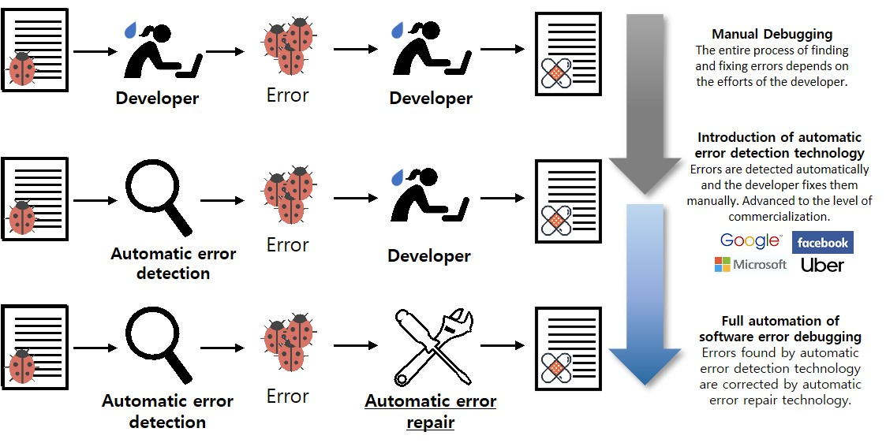

Project
Project Vision
Fully automated software error debugging process through the development of error repair technology at the level of practical use
Project background
The socioeconomic costs of software error problems are astronomical
As software(SW) becomes the center of value creation in all areas of society, the socioeconomic costs of SW errors are increasing astronomically. The software error problem occurs in a wide range of social areas including finance, transportation, distribution, etc., and the resulting loss has also increased rapidly. It is estimated that the loss caused by software errors has reached 1.7 trillion dollars in 2017.
Solution to software error problem: Automatic error detection + automatic repair
As software size and complexity have increased dramatically, it is no longer possible to rely on the developer's manual work to find and fix software errors. As a result, software errors are neglected in the industry, which causes software errors. The development of software error automatic detection and repair technology is the solution to this problem.
Automatic error detection technology has been developed to the level of practical use
Automatic software error detection technology has made remarkable developments over the past 30 years, becoming the technology that is routinely used in the software development stage. Global software companies such as Microsoft, Facebook, and Google have recently developed and started using their own error repair technology.
Automatic error repair technology is the next key challenge for solving software error
Compared to the automatic error detection technology, the automatic error repair technology remains at the present level. The error correction process relies entirely on the developer's manual work without the support of the automation tools. The absence of automatic error repair technology leads to an enormous increase in software development cost and a decrease in productivity, which is urgently required in the software field.
Project Objectives and Contents

We aim to develop high-performance automatic software error-correcting technology at the practical level. Specifically, the goal is to develop a technology that satisfies all of the following requirements:
- Fully-Automatic: Operate fully automatically without human intervention
- Generality: Technology applicable to variety of industry-wide errors, not just specific errors
- Accuracy: Sophisticated enough to eliminate most of the actual errors
- Reliability: No compromise to program functionality during error correction
- Scalability: Work efficiently for large, complex software
Develop a fully-automatic error correction architecture that generates reliable patches for typical errors
In order to automatically generate a reliable patch, a technology that automatically deduces the 'error correction specification' that expresses how an error should be corrected is essential. We develop a fully-automatic error correction architecture in which patch synthesizers and patch validators interact and gradually enhance patches and specifications.
Develop high-performance patch synthesis technology that satisfies generality, accuracy and scalability
High performance patch synthesis technology is essential to achieve the accuracy and scalability of error correction technology. We develop high-performance patch synthesis technology with both accuracy and scalability for typical errors.